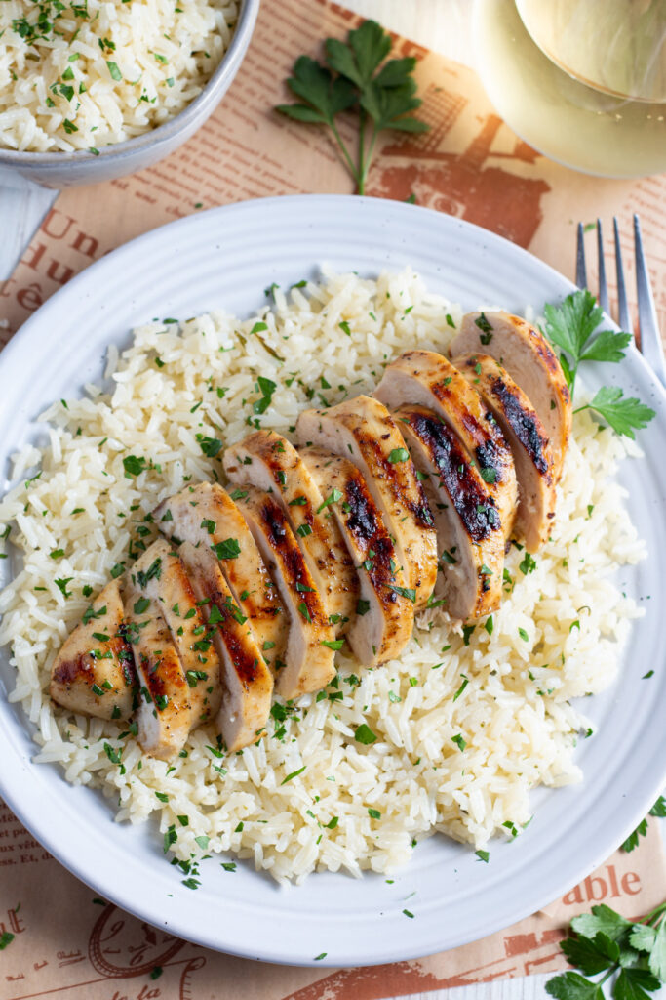

Chicken and Lime Rice Recipe

Description
A clean and healthy Chicken and Rice meal
Ingredients
- Chicken Breast
- White Rice
- Cilantro
- Limes
- Paprika
- Garlic Powder
- Salt
- Pepper
- Olive Oil
Directions
Rice
- Wash the rice until the water begins to run White
- Place rice in a high walled sauce pot
- Add water and bring to a Boil
- As it begins to Boil season with salt
- Reduce heat to a simmer and partially cover with lid
Chicken
- Trim the chicken removing any excess fat
- Coat chicken with small amount of olive oil
- sprinkle dry seasonings and massage the chicken to fully incorporate the flavor
- Spray nonstick spray into air fryer
- Cook chicken at 400 Degrees for 16-18 minutes
- Flip the chicken halfway through
- Let the chicken rest for half the time you cooked for
- Slice the chicken -- This is only for presentation
NOW ENJOY!